The invisible
bottleneck.
Nudging the onboarding process at Afianzar — where deals quietly die in the silence between actors.
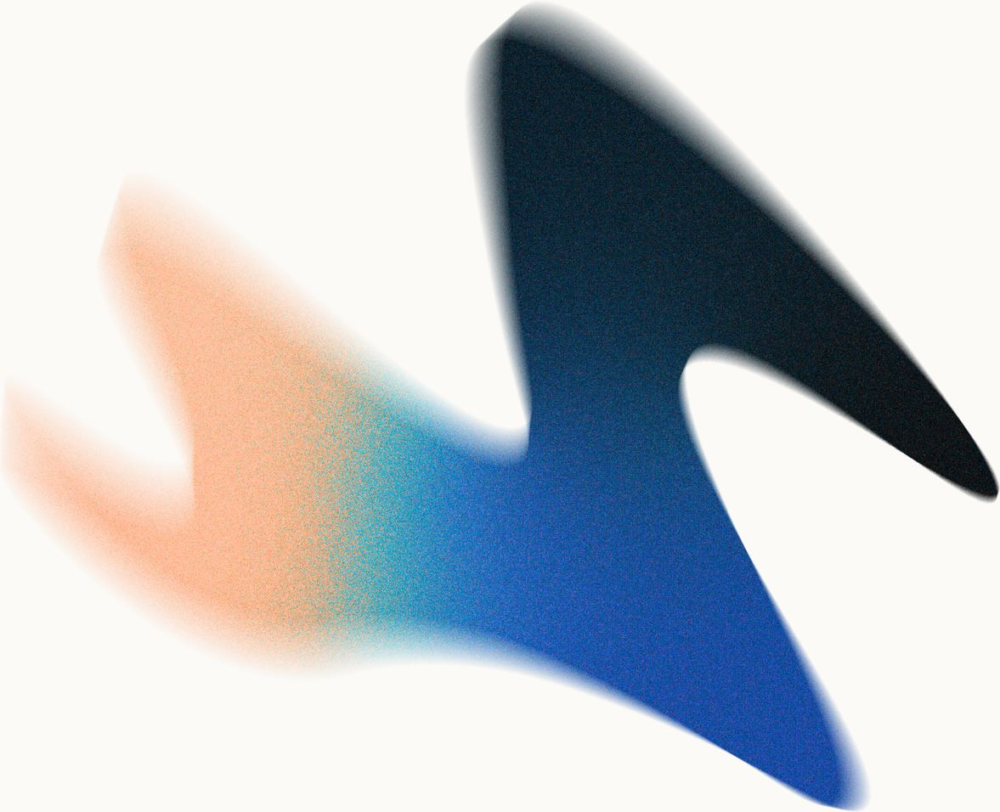
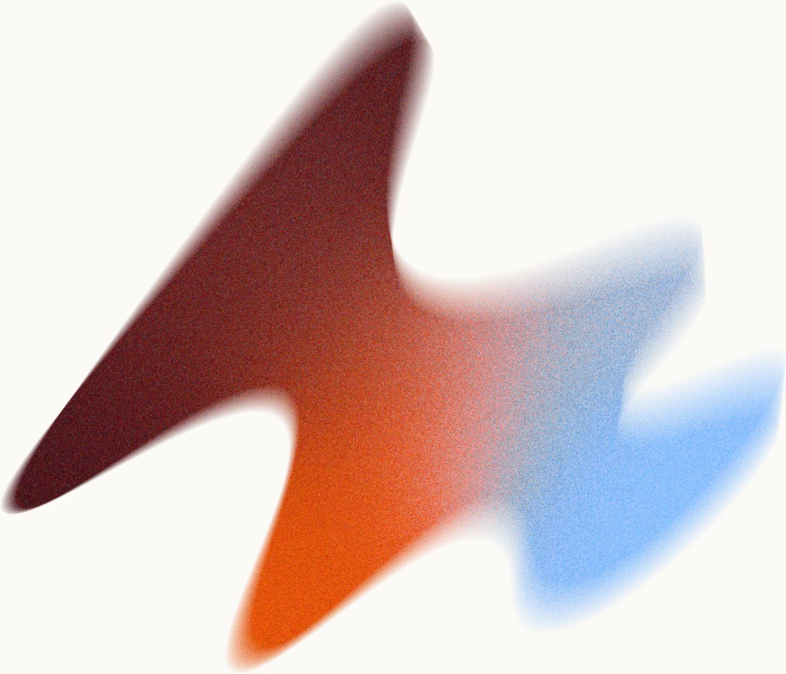
Afianzar evaluates the tenant's financial profile and issues a policy that guarantees rent payments to the property owner.
No co-signers. No cash deposits. Just a fast, trusted decision.
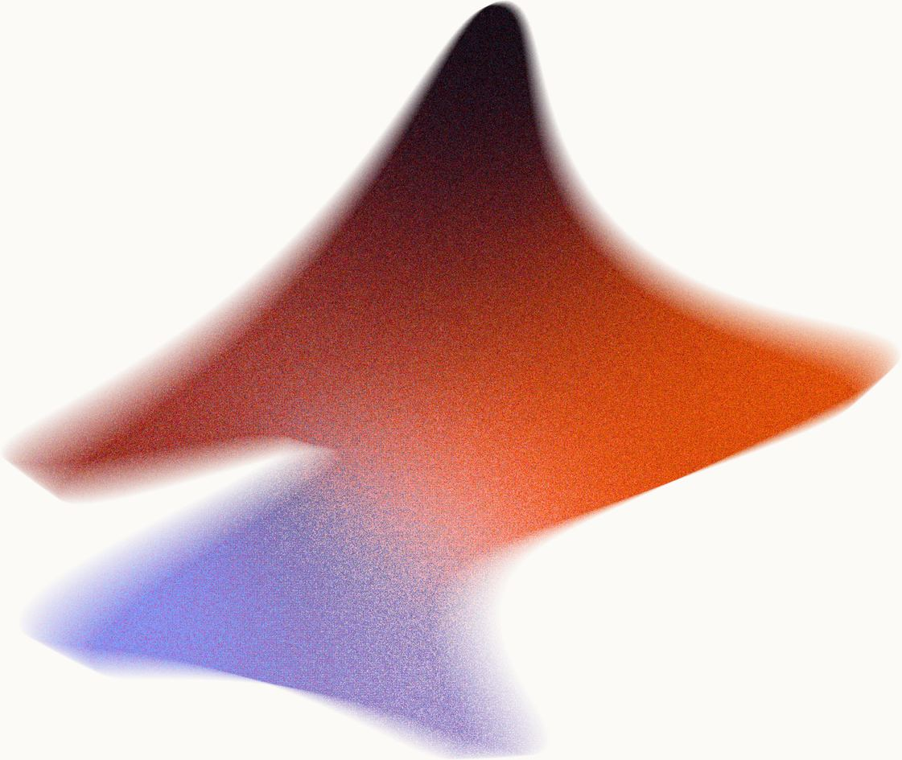
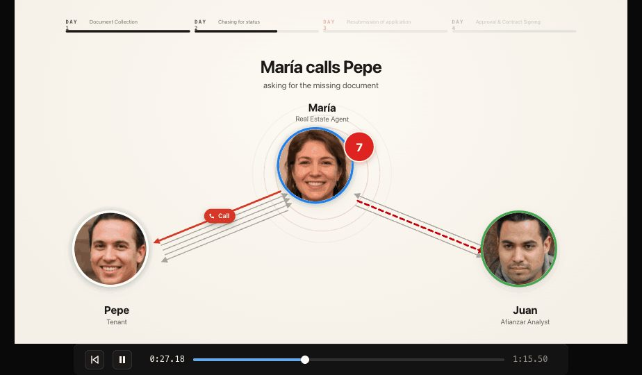
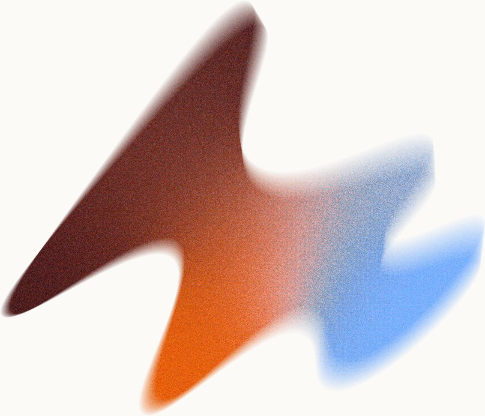
Documents trickle in across WhatsApp, email and phone — partial, out of order, sometimes lost in the thread. The agency never knows if the package is complete.
Once submitted, the case enters a black box. No tracking, no ETA, no acknowledgment. The agency has nothing to tell the client — just silence.
Any missing document triggers a four-actor relay. María chases the tenant, the tenant chases the bank, and every round adds days. Each loop feels like starting from zero.
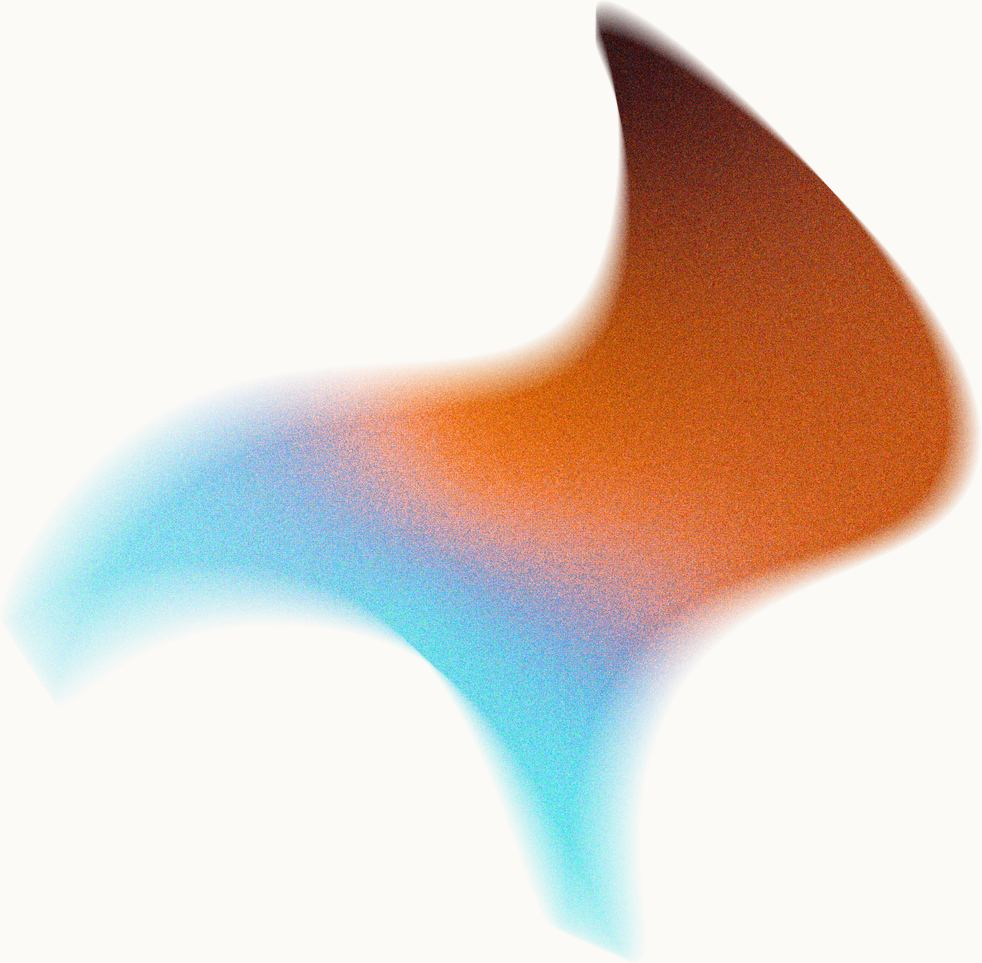
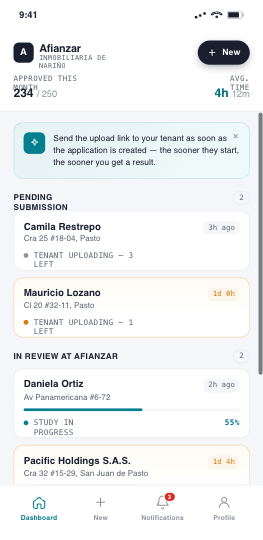
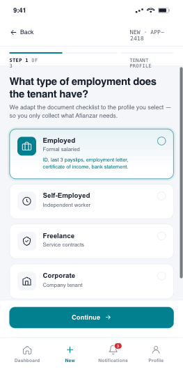
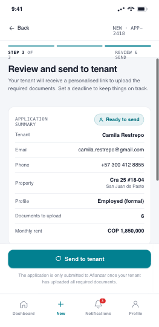
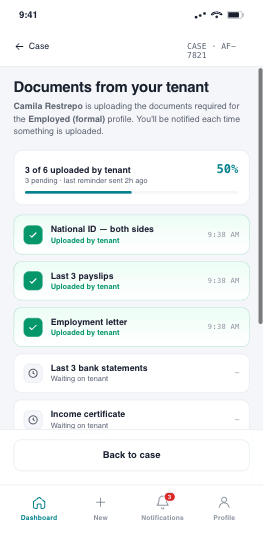
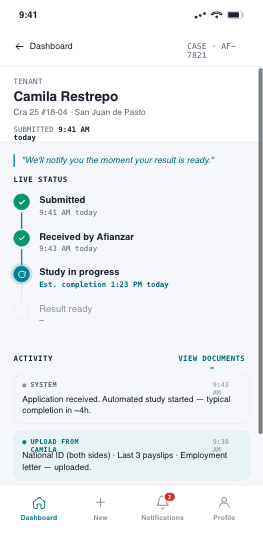
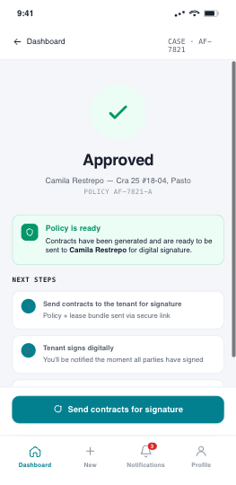
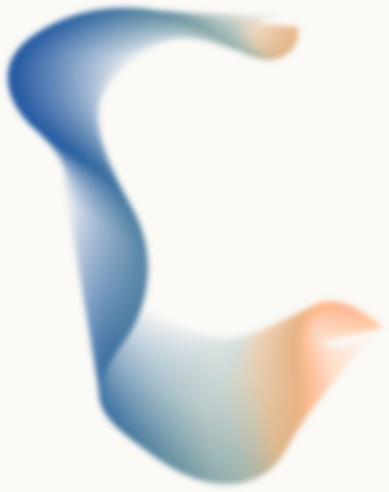